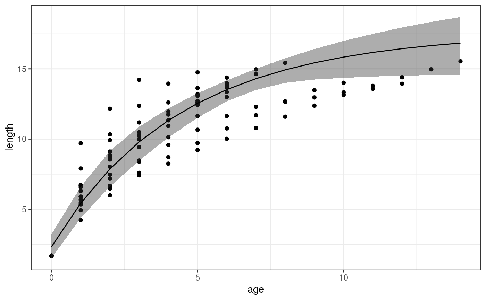

oto_growth.RdA function to extract growth parameters from otolith data
oto_growth(length, age, id, lmax = 20, linf_m, plot = TRUE, ...)
| length | Numerical vector with length |
|---|---|
| age | Numerical vector with age |
| id | Character vector with fish id |
| lmax | maximum size. Based on this value, maximum growth rate kmax will be computed. |
| linf_m | Prior for linf |
| plot | option to plot model fit (TRUE or FALSE) |
| ... | Additional arguments, see ?rstan::sampling() |
Returns a dataframe with estimates for linf, k and t0, sl and gp. There is a hierarchical structure for linf and k, so that there is a unique estimate for these parameters per individual (linf_j, k_j). linf and k are the population level estimates of linf and k. kmax is the standardised growth parameter, depending on lmax (kmax = exp(sl * log(lmax) + gp), see Morais and Bellwood (2018) for details)
zs <- fishflux::zebsco_growth fishflux::oto_growth(length = zs$length, age = zs$age, id = zs$id, lmax = 25, linf_m = 15, iter = 2000, chains = 1)#> #> SAMPLING FOR MODEL 'vonbert' NOW (CHAIN 1). #> Chain 1: Rejecting initial value: #> Chain 1: Error evaluating the log probability at the initial value. #> Chain 1: Exception: normal_lpdf: Location parameter[16] is -nan, but must be finite! (in 'model_vonbert' at line 56) #> #> Chain 1: Rejecting initial value: #> Chain 1: Error evaluating the log probability at the initial value. #> Chain 1: Exception: normal_lpdf: Location parameter[23] is -nan, but must be finite! (in 'model_vonbert' at line 56) #> #> Chain 1: Rejecting initial value: #> Chain 1: Error evaluating the log probability at the initial value. #> Chain 1: Exception: normal_lpdf: Location parameter[16] is -nan, but must be finite! (in 'model_vonbert' at line 56) #> #> Chain 1: Rejecting initial value: #> Chain 1: Error evaluating the log probability at the initial value. #> Chain 1: Exception: normal_lpdf: Location parameter[29] is -nan, but must be finite! (in 'model_vonbert' at line 56) #> #> Chain 1: Rejecting initial value: #> Chain 1: Error evaluating the log probability at the initial value. #> Chain 1: Exception: normal_lpdf: Location parameter[16] is -nan, but must be finite! (in 'model_vonbert' at line 56) #> #> Chain 1: #> Chain 1: Gradient evaluation took 6.3e-05 seconds #> Chain 1: 1000 transitions using 10 leapfrog steps per transition would take 0.63 seconds. #> Chain 1: Adjust your expectations accordingly! #> Chain 1: #> Chain 1: #> Chain 1: Iteration: 1 / 2000 [ 0%] (Warmup) #> Chain 1: Iteration: 200 / 2000 [ 10%] (Warmup) #> Chain 1: Iteration: 400 / 2000 [ 20%] (Warmup) #> Chain 1: Iteration: 600 / 2000 [ 30%] (Warmup) #> Chain 1: Iteration: 800 / 2000 [ 40%] (Warmup) #> Chain 1: Iteration: 1000 / 2000 [ 50%] (Warmup) #> Chain 1: Iteration: 1001 / 2000 [ 50%] (Sampling) #> Chain 1: Iteration: 1200 / 2000 [ 60%] (Sampling) #> Chain 1: Iteration: 1400 / 2000 [ 70%] (Sampling) #> Chain 1: Iteration: 1600 / 2000 [ 80%] (Sampling) #> Chain 1: Iteration: 1800 / 2000 [ 90%] (Sampling) #> Chain 1: Iteration: 2000 / 2000 [100%] (Sampling) #> Chain 1: #> Chain 1: Elapsed Time: 6.67508 seconds (Warm-up) #> Chain 1: 5.69621 seconds (Sampling) #> Chain 1: 12.3713 seconds (Total) #> Chain 1:#> Warning: The largest R-hat is 1.26, indicating chains have not mixed. #> Running the chains for more iterations may help. See #> http://mc-stan.org/misc/warnings.html#r-hat#> Warning: Bulk Effective Samples Size (ESS) is too low, indicating posterior means and medians may be unreliable. #> Running the chains for more iterations may help. See #> http://mc-stan.org/misc/warnings.html#bulk-ess#> Warning: Tail Effective Samples Size (ESS) is too low, indicating posterior variances and tail quantiles may be unreliable. #> Running the chains for more iterations may help. See #> http://mc-stan.org/misc/warnings.html#tail-ess#> $summary #> mean se_mean sd 2.5% 25% 50% #> k 0.23441533 0.014199617 0.063215547 0.14326017 0.18924633 0.2221775 #> linf 17.67049740 0.368249684 1.680271421 14.65454756 16.46448634 17.6483765 #> t0 -0.63542142 0.045531074 0.151266351 -0.94194102 -0.73877850 -0.6244556 #> sl -2.95001914 0.066009904 0.234233878 -3.42345831 -3.10661791 -2.9422425 #> gp 6.97525833 0.193429660 0.656955684 5.81899736 6.48917557 6.9557788 #> kmax 0.08097728 0.001310297 0.009458906 0.06348175 0.07414698 0.0807660 #> 75% 97.5% #> k 0.27143310 0.37985317 #> linf 18.85619025 20.98578034 #> t0 -0.51874224 -0.38547829 #> sl -2.77765938 -2.52990750 #> gp 7.43395656 8.28912840 #> kmax 0.08741743 0.09939739 #> #> $fitted #> age ypred_m ypred_lq ypred_uq yrep_m yrep_lq yrep_uq #> 1 0 2.333873 1.539665 3.241138 1.147626 0.7186289 1.613437 #> 2 1 5.434576 4.377472 6.597176 2.862715 2.4191165 3.314654 #> 3 2 7.875175 6.625860 9.165807 4.458627 3.9384656 5.012423 #> 4 3 9.803864 8.468039 10.883786 5.943834 5.3583228 6.571637 #> 5 4 11.333703 10.112495 12.189287 7.326193 6.7001672 8.043897 #> 6 5 12.551425 11.517228 13.257896 8.612989 7.9387098 9.353165 #> 7 6 13.523910 12.689937 14.178535 9.810982 9.1137169 10.580597 #> 8 7 14.302973 13.496646 15.011081 10.926440 10.2150871 11.669715 #> 9 8 14.928936 14.004701 15.747625 11.965181 11.2623797 12.686005 #> 10 9 15.433301 14.240584 16.409167 12.932601 12.2315509 13.621737 #> 11 10 15.840782 14.358431 16.988288 13.833710 13.1417993 14.529403 #> 12 11 16.170832 14.450379 17.487497 14.673157 13.9778151 15.362800 #> 13 12 16.438818 14.510343 17.946775 15.455258 14.7928154 16.142986 #> 14 13 16.656921 14.557503 18.343749 16.184020 15.4996224 16.919482 #> 15 14 16.834824 14.587590 18.685340 16.863164 16.1525243 17.653036 #> 16 0 2.333873 1.539665 3.241138 2.589543 1.7623618 3.456295 #> 17 1 5.434576 4.377472 6.597176 5.912999 4.9743003 6.894224 #> 18 2 7.875175 6.625860 9.165807 8.409745 7.3887267 9.391351 #> 19 3 9.803864 8.468039 10.883786 10.295701 9.3383088 11.095885 #> 20 4 11.333703 10.112495 12.189287 11.727636 10.9471300 12.340293 #> 21 5 12.551425 11.517228 13.257896 12.820129 12.2200630 13.379166 #> 22 6 13.523910 12.689937 14.178535 13.657456 12.9488686 14.313472 #> 23 0 2.333873 1.539665 3.241138 2.578964 1.7268577 3.466364 #> 24 1 5.434576 4.377472 6.597176 5.891786 4.9864638 6.951014 #> 25 2 7.875175 6.625860 9.165807 8.385178 7.3922708 9.453629 #> 26 3 9.803864 8.468039 10.883786 10.272945 9.3503008 11.064663 #> 27 4 11.333703 10.112495 12.189287 11.709846 10.9427895 12.328733 #> 28 5 12.551425 11.517228 13.257896 12.808895 12.1553365 13.357355 #> 29 0 2.333873 1.539665 3.241138 2.618229 1.7948593 3.483712 #> 30 1 5.434576 4.377472 6.597176 5.965276 5.1233008 6.853098 #> 31 2 7.875175 6.625860 9.165807 8.469091 7.4988377 9.391925 #> 32 3 9.803864 8.468039 10.883786 10.351528 9.4323139 11.089894 #> 33 4 11.333703 10.112495 12.189287 11.773514 11.0282449 12.335604 #> 34 5 12.551425 11.517228 13.257896 12.852500 12.2008932 13.367349 #> 35 6 13.523910 12.689937 14.178535 13.674708 12.9323785 14.304424 #> 36 0 2.333873 1.539665 3.241138 2.971501 1.9679108 4.015515 #> 37 1 5.434576 4.377472 6.597176 6.555427 5.6588710 7.516282 #> 38 2 7.875175 6.625860 9.165807 9.072522 8.1982292 9.898940 #> 39 3 9.803864 8.468039 10.883786 10.847840 10.1159448 11.512385 #> 40 4 11.333703 10.112495 12.189287 12.105154 11.5428207 12.741667 #> 41 5 12.551425 11.517228 13.257896 12.999202 12.3818605 13.655436 #> 42 6 13.523910 12.689937 14.178535 13.637450 12.7898769 14.440784 #> 43 7 14.302973 13.496646 15.011081 14.094845 13.0493386 15.057481 #> 44 0 2.333873 1.539665 3.241138 2.363529 1.6028983 3.153415 #> 45 1 5.434576 4.377472 6.597176 5.496227 4.6602908 6.486467 #> 46 2 7.875175 6.625860 9.165807 7.952975 7.0707987 9.042083 #> 47 3 9.803864 8.468039 10.883786 9.886700 8.9996615 10.828606 #> 48 4 11.333703 10.112495 12.189287 11.413929 10.6188971 12.102440 #> 49 5 12.551425 11.517228 13.257896 12.623929 11.9803907 13.176302 #> 50 6 13.523910 12.689937 14.178535 13.585423 12.9771659 14.157942 #> 51 0 2.333873 1.539665 3.241138 1.879263 1.2405567 2.569283 #> 52 1 5.434576 4.377472 6.597176 4.518793 3.8564730 5.217926 #> 53 2 7.875175 6.625860 9.165807 6.762784 6.0070612 7.672848 #> 54 3 9.803864 8.468039 10.883786 8.672366 7.8355407 9.622913 #> 55 4 11.333703 10.112495 12.189287 10.298904 9.4507332 11.237682 #> 56 5 12.551425 11.517228 13.257896 11.685616 10.8246095 12.531807 #> 57 6 13.523910 12.689937 14.178535 12.868912 12.0854555 13.659084 #> 58 0 2.333873 1.539665 3.241138 2.665526 1.8423721 3.617330 #> 59 1 5.434576 4.377472 6.597176 6.043481 5.0765788 7.302469 #> 60 2 7.875175 6.625860 9.165807 8.532711 7.4737945 9.680102 #> 61 3 9.803864 8.468039 10.883786 10.382620 9.4076271 11.231303 #> 62 4 11.333703 10.112495 12.189287 11.767956 11.0269013 12.416372 #> 63 5 12.551425 11.517228 13.257896 12.812604 12.1968782 13.388212 #> 64 6 13.523910 12.689937 14.178535 13.605339 12.6930615 14.297324 #> 65 0 2.333873 1.539665 3.241138 1.370669 0.8713933 1.930208 #> 66 1 5.434576 4.377472 6.597176 3.385050 2.8716057 3.937292 #> 67 2 7.875175 6.625860 9.165807 5.215604 4.6033273 5.864994 #> 68 3 9.803864 8.468039 10.883786 6.879461 6.1975007 7.607160 #> 69 4 11.333703 10.112495 12.189287 8.392122 7.6770703 9.154032 #> 70 5 12.551425 11.517228 13.257896 9.767618 9.0282943 10.552400 #> 71 6 13.523910 12.689937 14.178535 11.018650 10.2894508 11.778251 #> 72 7 14.302973 13.496646 15.011081 12.156718 11.4301207 12.913671 #> 73 8 14.928936 14.004701 15.747625 13.192239 12.4967461 13.941529 #> 74 9 15.433301 14.240584 16.409167 14.134648 13.4305977 14.880400 #> 75 10 15.840782 14.358431 16.988288 14.992496 14.2805135 15.742800 #> 76 0 2.333873 1.539665 3.241138 3.092085 2.0939222 4.183380 #> 77 1 5.434576 4.377472 6.597176 6.747129 5.9124821 7.691086 #> 78 2 7.875175 6.625860 9.165807 9.246390 8.5396532 10.010644 #> 79 3 9.803864 8.468039 10.883786 10.963702 10.4073132 11.633120 #> 80 4 11.333703 10.112495 12.189287 12.149254 11.6178485 12.779476 #> 81 5 12.551425 11.517228 13.257896 12.971398 12.2457030 13.696867 #> 82 0 2.333873 1.539665 3.241138 2.299861 1.2068703 3.771686 #> 83 1 5.434576 4.377472 6.597176 5.278239 3.2074197 7.688931 #> 84 2 7.875175 6.625860 9.165807 7.402255 4.8885694 9.920899 #> 85 3 9.803864 8.468039 10.883786 8.978527 6.4336265 11.256118 #> 86 4 11.333703 10.112495 12.189287 10.194524 7.8982256 12.181182 #> 87 5 12.551425 11.517228 13.257896 11.166311 9.2329233 12.858345 #> 88 6 13.523910 12.689937 14.178535 11.966836 10.4603465 13.365790 #> 89 7 14.302973 13.496646 15.011081 12.642783 11.5894960 13.754290 #> 90 8 14.928936 14.004701 15.747625 13.224690 12.3585889 14.142560 #> 91 9 15.433301 14.240584 16.409167 13.733056 12.4559108 14.762618 #> 92 10 15.840782 14.358431 16.988288 14.182053 12.4719633 15.528377 #> 93 11 16.170832 14.450379 17.487497 14.581811 12.4812404 16.253124 #> 94 12 16.438818 14.510343 17.946775 14.939821 12.4875591 16.942488 #> 95 0 2.333873 1.539665 3.241138 2.206448 1.4540917 2.981137 #> 96 1 5.434576 4.377472 6.597176 5.184960 4.3129620 6.095669 #> 97 2 7.875175 6.625860 9.165807 7.590266 6.6462485 8.644707 #> 98 3 9.803864 8.468039 10.883786 9.537108 8.5891190 10.577726 #> 99 4 11.333703 10.112495 12.189287 11.116300 10.2371143 11.965551 #> 100 5 12.551425 11.517228 13.257896 12.399942 11.6378260 13.095127 #> 101 6 13.523910 12.689937 14.178535 13.445432 12.8193301 14.075135 #> 102 7 14.302973 13.496646 15.011081 14.298589 13.6649797 14.920866 #> 103 8 14.928936 14.004701 15.747625 14.996081 14.2748816 15.682291 #> 104 0 2.333873 1.539665 3.241138 3.772870 2.5958084 4.980531 #> 105 1 5.434576 4.377472 6.597176 7.656715 6.7533128 8.613607 #> 106 2 7.875175 6.625860 9.165807 9.881603 9.2156959 10.641887 #> 107 3 9.803864 8.468039 10.883786 11.173647 10.4665000 11.935814 #> #> $stanfit #> Inference for Stan model: vonbert. #> 1 chains, each with iter=2000; warmup=1000; thin=1; #> post-warmup draws per chain=1000, total post-warmup draws=1000. #> #> mean se_mean sd 2.5% 25% 50% 75% 97.5% n_eff #> t0 -0.64 0.05 0.15 -0.94 -0.74 -0.62 -0.52 -0.39 11 #> linf 17.67 0.37 1.68 14.65 16.46 17.65 18.86 20.99 21 #> sl -2.95 0.07 0.23 -3.42 -3.11 -2.94 -2.78 -2.53 13 #> gp 6.98 0.19 0.66 5.82 6.49 6.96 7.43 8.29 12 #> sigma 1.06 0.01 0.09 0.89 1.00 1.05 1.11 1.24 75 #> sd_linf[1] 4.43 0.10 1.26 2.57 3.48 4.24 5.15 7.43 162 #> z_linf[1,1] -0.29 0.02 0.35 -0.97 -0.54 -0.29 -0.06 0.40 242 #> z_linf[1,2] -0.67 0.05 0.38 -1.43 -0.90 -0.66 -0.42 0.04 53 #> z_linf[1,3] 0.26 0.46 1.05 -1.31 -0.74 0.39 1.20 1.91 5 #> z_linf[1,4] 0.13 0.03 0.36 -0.55 -0.12 0.14 0.38 0.78 204 #> z_linf[1,5] -1.11 0.05 0.43 -1.95 -1.38 -1.09 -0.81 -0.34 68 #> z_linf[1,6] 2.04 0.10 0.54 1.06 1.65 2.02 2.39 3.16 30 #> z_linf[1,7] -0.26 0.02 0.37 -0.97 -0.51 -0.26 -0.01 0.43 299 #> z_linf[1,8] -0.25 0.02 0.36 -0.98 -0.49 -0.24 0.00 0.42 247 #> z_linf[1,9] -0.58 0.05 0.38 -1.34 -0.83 -0.56 -0.32 0.14 63 #> z_linf[1,10] -0.05 0.02 0.35 -0.74 -0.27 -0.04 0.18 0.66 250 #> z_linf[1,11] 0.54 0.03 0.34 -0.13 0.30 0.54 0.76 1.23 155 #> z_linf[1,12] -0.32 0.02 0.38 -1.06 -0.58 -0.31 -0.08 0.43 270 #> z_linf[1,13] 1.45 0.08 0.43 0.66 1.14 1.43 1.76 2.35 32 #> r_linf[1] -1.17 0.09 1.56 -4.27 -2.23 -1.18 -0.28 2.07 279 #> r_linf[2] -2.75 0.12 1.47 -5.59 -3.67 -2.75 -1.77 0.18 145 #> r_linf[3] 0.83 1.95 4.47 -6.29 -3.31 1.62 4.85 7.90 5 #> r_linf[4] 0.61 0.12 1.64 -2.44 -0.49 0.61 1.57 4.06 183 #> r_linf[5] -4.57 0.12 1.47 -7.59 -5.52 -4.59 -3.60 -1.86 158 #> r_linf[6] 8.74 0.73 2.60 4.59 6.90 8.47 10.30 14.45 13 #> r_linf[7] -1.05 0.09 1.58 -4.14 -2.07 -1.07 -0.05 2.31 301 #> r_linf[8] -1.02 0.09 1.57 -4.26 -1.98 -1.05 0.01 1.94 298 #> r_linf[9] -2.36 0.13 1.49 -5.20 -3.28 -2.39 -1.43 0.74 133 #> r_linf[10] -0.14 0.10 1.55 -3.15 -1.04 -0.17 0.79 2.85 262 #> r_linf[11] 2.35 0.19 1.61 -0.52 1.25 2.30 3.41 5.78 70 #> r_linf[12] -1.33 0.11 1.73 -4.85 -2.38 -1.33 -0.30 2.25 250 #> r_linf[13] 6.25 0.55 2.13 2.82 4.70 6.01 7.50 11.00 15 #> k 0.23 0.01 0.06 0.14 0.19 0.22 0.27 0.38 20 #> k_j[1] 0.29 0.01 0.07 0.17 0.24 0.28 0.32 0.46 28 #> k_j[2] 0.38 0.01 0.07 0.26 0.33 0.37 0.42 0.54 83 #> k_j[3] 0.29 0.09 0.20 0.07 0.10 0.17 0.49 0.62 5 #> k_j[4] 0.21 0.00 0.05 0.14 0.18 0.20 0.23 0.32 92 #> k_j[5] 0.56 0.01 0.12 0.36 0.47 0.55 0.63 0.82 94 #> k_j[6] 0.07 0.00 0.01 0.05 0.06 0.07 0.08 0.09 435 #> k_j[7] 0.28 0.01 0.07 0.17 0.23 0.27 0.33 0.45 27 #> k_j[8] 0.28 0.01 0.08 0.17 0.23 0.26 0.32 0.48 28 #> k_j[9] 0.35 0.01 0.07 0.23 0.30 0.35 0.39 0.49 121 #> k_j[10] 0.24 0.01 0.06 0.15 0.20 0.23 0.27 0.39 29 #> k_j[11] 0.16 0.00 0.03 0.11 0.14 0.16 0.18 0.23 86 #> k_j[12] 0.30 0.02 0.09 0.17 0.23 0.28 0.35 0.54 25 #> k_j[13] 0.09 0.00 0.01 0.07 0.08 0.09 0.10 0.13 472 #> linf_j[1] 16.50 0.29 1.54 13.70 15.47 16.40 17.40 19.85 29 #> linf_j[2] 14.92 0.20 1.06 13.01 14.18 14.87 15.56 17.21 28 #> linf_j[3] 18.50 2.39 5.23 12.49 13.40 18.46 23.30 27.12 5 #> linf_j[4] 18.28 0.14 1.58 15.33 17.23 18.24 19.29 21.76 133 #> linf_j[5] 13.10 0.20 1.04 11.29 12.36 13.06 13.80 15.26 26 #> linf_j[6] 26.41 0.14 2.51 22.32 24.63 26.14 28.01 32.18 326 #> linf_j[7] 16.62 0.30 1.60 13.69 15.44 16.58 17.67 19.81 28 #> linf_j[8] 16.65 0.30 1.59 13.56 15.58 16.69 17.68 19.63 29 #> linf_j[9] 15.31 0.16 1.10 13.40 14.55 15.20 15.97 17.95 48 #> linf_j[10] 17.54 0.25 1.59 14.41 16.49 17.58 18.52 20.66 41 #> linf_j[11] 20.02 0.09 1.57 17.14 18.95 20.05 21.03 23.38 321 #> linf_j[12] 16.34 0.36 1.78 13.09 15.15 16.25 17.52 19.88 24 #> linf_j[13] 23.93 0.10 2.05 20.62 22.49 23.73 25.13 28.69 409 #> kmax 0.08 0.00 0.01 0.06 0.07 0.08 0.09 0.10 52 #> y_rep[1] 1.15 0.08 0.25 0.72 0.95 1.14 1.34 1.61 9 #> y_rep[2] 2.86 0.07 0.25 2.42 2.68 2.85 3.05 3.31 11 #> y_rep[3] 4.46 0.06 0.28 3.94 4.26 4.46 4.65 5.01 20 #> y_rep[4] 5.94 0.04 0.31 5.36 5.73 5.95 6.13 6.57 50 #> y_rep[5] 7.33 0.03 0.34 6.70 7.09 7.34 7.53 8.04 137 #> y_rep[6] 8.61 0.01 0.36 7.94 8.37 8.62 8.84 9.35 597 #> y_rep[7] 9.81 0.01 0.37 9.11 9.56 9.82 10.04 10.58 853 #> y_rep[8] 10.93 0.01 0.37 10.22 10.69 10.94 11.16 11.67 1041 #> y_rep[9] 11.97 0.01 0.37 11.26 11.74 11.97 12.20 12.69 1107 #> y_rep[10] 12.93 0.01 0.36 12.23 12.71 12.94 13.16 13.62 1167 #> y_rep[11] 13.83 0.01 0.35 13.14 13.60 13.84 14.06 14.53 1202 #> y_rep[12] 14.67 0.01 0.35 13.98 14.44 14.68 14.90 15.36 599 #> y_rep[13] 15.46 0.02 0.35 14.79 15.21 15.45 15.68 16.14 239 #> y_rep[14] 16.18 0.03 0.36 15.50 15.93 16.17 16.42 16.92 119 #> y_rep[15] 16.86 0.04 0.38 16.15 16.59 16.84 17.11 17.65 76 #> y_rep[16] 2.59 0.09 0.44 1.76 2.27 2.59 2.89 3.46 25 #> y_rep[17] 5.91 0.01 0.50 4.97 5.58 5.89 6.24 6.89 1477 #> y_rep[18] 8.41 0.02 0.53 7.39 8.05 8.40 8.80 9.39 1228 #> y_rep[19] 10.30 0.01 0.46 9.34 9.98 10.33 10.64 11.10 1164 #> y_rep[20] 11.73 0.01 0.36 10.95 11.50 11.78 11.97 12.34 1255 #> y_rep[21] 12.82 0.01 0.30 12.22 12.63 12.83 13.02 13.38 850 #> y_rep[22] 13.66 0.05 0.34 12.95 13.46 13.67 13.89 14.31 41 #> y_rep[23] 2.58 0.09 0.44 1.73 2.26 2.57 2.88 3.47 25 #> y_rep[24] 5.89 0.01 0.51 4.99 5.53 5.88 6.23 6.95 1225 #> y_rep[25] 8.39 0.02 0.53 7.39 8.00 8.38 8.74 9.45 778 #> y_rep[26] 10.27 0.02 0.45 9.35 9.97 10.30 10.61 11.06 744 #> y_rep[27] 11.71 0.01 0.35 10.94 11.50 11.75 11.95 12.33 953 #> y_rep[28] 12.81 0.02 0.30 12.16 12.63 12.82 13.01 13.36 268 #> y_rep[29] 2.62 0.10 0.44 1.79 2.30 2.60 2.91 3.48 20 #> y_rep[30] 5.97 0.01 0.47 5.12 5.63 5.95 6.29 6.85 1597 #> y_rep[31] 8.47 0.01 0.49 7.50 8.15 8.47 8.82 9.39 1351 #> y_rep[32] 10.35 0.01 0.43 9.43 10.08 10.38 10.65 11.09 1266 #> y_rep[33] 11.77 0.01 0.33 11.03 11.58 11.81 12.00 12.34 1307 #> y_rep[34] 12.85 0.02 0.29 12.20 12.69 12.86 13.05 13.37 211 #> y_rep[35] 13.67 0.06 0.35 12.93 13.48 13.69 13.90 14.30 39 #> y_rep[36] 2.97 0.16 0.55 1.97 2.56 2.95 3.38 4.02 12 #> y_rep[37] 6.56 0.09 0.48 5.66 6.24 6.55 6.90 7.52 31 #> y_rep[38] 9.07 0.05 0.44 8.20 8.78 9.08 9.36 9.90 66 #> y_rep[39] 10.85 0.06 0.36 10.12 10.61 10.85 11.08 11.51 40 #> y_rep[40] 12.11 0.07 0.31 11.54 11.90 12.09 12.31 12.74 18 #> y_rep[41] 13.00 0.09 0.33 12.38 12.78 12.97 13.23 13.66 15 #> y_rep[42] 13.64 0.10 0.42 12.79 13.37 13.63 13.92 14.44 18 #> y_rep[43] 14.09 0.11 0.52 13.05 13.76 14.12 14.45 15.06 23 #> y_rep[44] 2.36 0.09 0.41 1.60 2.06 2.36 2.66 3.15 21 #> y_rep[45] 5.50 0.01 0.45 4.66 5.20 5.45 5.78 6.49 1331 #> y_rep[46] 7.95 0.02 0.50 7.07 7.61 7.93 8.27 9.04 1035 #> y_rep[47] 9.89 0.02 0.47 9.00 9.56 9.88 10.21 10.83 708 #> y_rep[48] 11.41 0.01 0.39 10.62 11.15 11.44 11.70 12.10 775 #> y_rep[49] 12.62 0.01 0.32 11.98 12.43 12.64 12.84 13.18 877 #> y_rep[50] 13.59 0.01 0.30 12.98 13.40 13.59 13.79 14.16 727 #> y_rep[51] 1.88 0.09 0.35 1.24 1.61 1.87 2.14 2.57 14 #> y_rep[52] 4.52 0.03 0.36 3.86 4.27 4.51 4.75 5.22 180 #> y_rep[53] 6.76 0.01 0.42 6.01 6.46 6.74 7.03 7.67 1295 #> y_rep[54] 8.67 0.01 0.46 7.84 8.36 8.66 8.97 9.62 1033 #> y_rep[55] 10.30 0.02 0.46 9.45 9.99 10.29 10.60 11.24 603 #> y_rep[56] 11.69 0.02 0.44 10.82 11.39 11.69 11.97 12.53 410 #> y_rep[57] 12.87 0.02 0.40 12.09 12.60 12.87 13.14 13.66 363 #> y_rep[58] 2.67 0.07 0.45 1.84 2.35 2.66 2.94 3.62 42 #> y_rep[59] 6.04 0.02 0.57 5.08 5.63 5.97 6.42 7.30 1052 #> y_rep[60] 8.53 0.03 0.58 7.47 8.10 8.51 8.96 9.68 353 #> y_rep[61] 10.38 0.02 0.48 9.41 10.05 10.41 10.76 11.23 455 #> y_rep[62] 11.77 0.01 0.35 11.03 11.54 11.81 12.00 12.42 1042 #> y_rep[63] 12.81 0.03 0.32 12.20 12.61 12.83 13.02 13.39 136 #> y_rep[64] 13.61 0.08 0.41 12.69 13.40 13.66 13.87 14.30 28 #> y_rep[65] 1.37 0.09 0.29 0.87 1.15 1.35 1.59 1.93 10 #> y_rep[66] 3.39 0.07 0.28 2.87 3.18 3.38 3.58 3.94 17 #> y_rep[67] 5.22 0.04 0.31 4.60 5.00 5.21 5.43 5.86 53 #> y_rep[68] 6.88 0.02 0.35 6.20 6.64 6.87 7.12 7.61 360 #> y_rep[69] 8.39 0.01 0.38 7.68 8.14 8.38 8.65 9.15 804 #> y_rep[70] 9.77 0.01 0.39 9.03 9.51 9.76 10.02 10.55 954 #> y_rep[71] 11.02 0.01 0.39 10.29 10.76 11.02 11.28 11.78 1000 #> y_rep[72] 12.16 0.01 0.39 11.43 11.89 12.18 12.41 12.91 949 #> y_rep[73] 13.19 0.02 0.38 12.50 12.94 13.20 13.44 13.94 620 #> y_rep[74] 14.13 0.02 0.37 13.43 13.89 14.14 14.38 14.88 323 #> y_rep[75] 14.99 0.03 0.37 14.28 14.75 14.99 15.24 15.74 132 #> y_rep[76] 3.09 0.16 0.55 2.09 2.68 3.06 3.50 4.18 11 #> y_rep[77] 6.75 0.09 0.46 5.91 6.43 6.73 7.04 7.69 27 #> y_rep[78] 9.25 0.06 0.39 8.54 8.97 9.24 9.51 10.01 38 #> y_rep[79] 10.96 0.07 0.32 10.41 10.74 10.95 11.18 11.63 21 #> y_rep[80] 12.15 0.09 0.31 11.62 11.93 12.13 12.37 12.78 12 #> y_rep[81] 12.97 0.10 0.37 12.25 12.73 12.94 13.23 13.70 13 #> y_rep[82] 2.30 0.35 0.80 1.21 1.59 2.06 2.99 3.77 5 #> y_rep[83] 5.28 0.82 1.73 3.21 3.58 4.64 7.02 7.69 4 #> y_rep[84] 7.40 0.97 2.03 4.89 5.38 6.81 9.47 9.92 4 #> y_rep[85] 8.98 0.94 1.96 6.43 7.02 8.64 10.95 11.26 4 #> y_rep[86] 10.19 0.80 1.69 7.90 8.52 10.18 11.88 12.18 4 #> y_rep[87] 11.17 0.61 1.32 9.23 9.87 11.46 12.46 12.86 5 #> y_rep[88] 11.97 0.41 0.93 10.46 11.11 12.06 12.83 13.37 5 #> y_rep[89] 12.64 0.19 0.59 11.59 12.19 12.61 13.06 13.75 10 #> y_rep[90] 13.22 0.02 0.45 12.36 12.92 13.22 13.51 14.14 701 #> y_rep[91] 13.73 0.21 0.64 12.46 13.27 13.86 14.21 14.76 9 #> y_rep[92] 14.18 0.40 0.95 12.47 13.33 14.43 14.99 15.53 6 #> y_rep[93] 14.58 0.57 1.27 12.48 13.35 15.11 15.73 16.25 5 #> y_rep[94] 14.94 0.73 1.58 12.49 13.37 15.81 16.41 16.94 5 #> y_rep[95] 2.21 0.11 0.41 1.45 1.90 2.21 2.51 2.98 15 #> y_rep[96] 5.18 0.02 0.46 4.31 4.88 5.18 5.47 6.10 379 #> y_rep[97] 7.59 0.01 0.52 6.65 7.23 7.57 7.92 8.64 1453 #> y_rep[98] 9.54 0.01 0.51 8.59 9.18 9.54 9.89 10.58 1430 #> y_rep[99] 11.12 0.01 0.46 10.24 10.79 11.13 11.44 11.97 1409 #> y_rep[100] 12.40 0.01 0.38 11.64 12.14 12.43 12.67 13.10 1326 #> y_rep[101] 13.45 0.01 0.32 12.82 13.23 13.46 13.66 14.08 1074 #> y_rep[102] 14.30 0.01 0.31 13.66 14.09 14.30 14.51 14.92 761 #> y_rep[103] 15.00 0.02 0.36 14.27 14.78 15.00 15.24 15.68 542 #> y_rep[104] 3.77 0.21 0.64 2.60 3.28 3.75 4.25 4.98 9 #> y_rep[105] 7.66 0.13 0.49 6.75 7.32 7.64 8.00 8.61 14 #> y_rep[106] 9.88 0.13 0.38 9.22 9.60 9.85 10.14 10.64 9 #> y_rep[107] 11.17 0.14 0.39 10.47 10.90 11.13 11.46 11.94 8 #> y_m[1] 2.33 0.06 0.43 1.54 2.04 2.32 2.63 3.24 47 #> y_m[2] 5.43 0.04 0.54 4.38 5.09 5.41 5.76 6.60 177 #> y_m[3] 7.88 0.05 0.62 6.63 7.49 7.86 8.27 9.17 126 #> y_m[4] 9.80 0.06 0.59 8.47 9.44 9.82 10.21 10.88 117 #> y_m[5] 11.33 0.05 0.52 10.11 11.04 11.37 11.71 12.19 116 #> y_m[6] 12.55 0.03 0.43 11.52 12.33 12.60 12.84 13.26 213 #> y_m[7] 13.52 0.02 0.37 12.69 13.34 13.55 13.76 14.18 402 #> y_m[8] 14.30 0.02 0.38 13.50 14.09 14.32 14.55 15.01 448 #> y_m[9] 14.93 0.04 0.45 14.00 14.67 14.95 15.24 15.75 125 #> y_m[10] 15.43 0.08 0.56 14.24 15.12 15.49 15.82 16.41 50 #> y_m[11] 15.84 0.12 0.68 14.36 15.47 15.93 16.30 16.99 34 #> y_m[12] 16.17 0.15 0.79 14.45 15.70 16.29 16.72 17.49 28 #> y_m[13] 16.44 0.18 0.90 14.51 15.89 16.56 17.09 17.95 25 #> y_m[14] 16.66 0.21 1.00 14.56 16.03 16.79 17.39 18.34 23 #> y_m[15] 16.83 0.23 1.09 14.59 16.13 16.96 17.65 18.69 22 #> y_m[16] 2.33 0.06 0.43 1.54 2.04 2.32 2.63 3.24 47 #> y_m[17] 5.43 0.04 0.54 4.38 5.09 5.41 5.76 6.60 177 #> y_m[18] 7.88 0.05 0.62 6.63 7.49 7.86 8.27 9.17 126 #> y_m[19] 9.80 0.06 0.59 8.47 9.44 9.82 10.21 10.88 117 #> y_m[20] 11.33 0.05 0.52 10.11 11.04 11.37 11.71 12.19 116 #> y_m[21] 12.55 0.03 0.43 11.52 12.33 12.60 12.84 13.26 213 #> y_m[22] 13.52 0.02 0.37 12.69 13.34 13.55 13.76 14.18 402 #> y_m[23] 2.33 0.06 0.43 1.54 2.04 2.32 2.63 3.24 47 #> y_m[24] 5.43 0.04 0.54 4.38 5.09 5.41 5.76 6.60 177 #> y_m[25] 7.88 0.05 0.62 6.63 7.49 7.86 8.27 9.17 126 #> y_m[26] 9.80 0.06 0.59 8.47 9.44 9.82 10.21 10.88 117 #> y_m[27] 11.33 0.05 0.52 10.11 11.04 11.37 11.71 12.19 116 #> y_m[28] 12.55 0.03 0.43 11.52 12.33 12.60 12.84 13.26 213 #> y_m[29] 2.33 0.06 0.43 1.54 2.04 2.32 2.63 3.24 47 #> y_m[30] 5.43 0.04 0.54 4.38 5.09 5.41 5.76 6.60 177 #> y_m[31] 7.88 0.05 0.62 6.63 7.49 7.86 8.27 9.17 126 #> y_m[32] 9.80 0.06 0.59 8.47 9.44 9.82 10.21 10.88 117 #> y_m[33] 11.33 0.05 0.52 10.11 11.04 11.37 11.71 12.19 116 #> y_m[34] 12.55 0.03 0.43 11.52 12.33 12.60 12.84 13.26 213 #> y_m[35] 13.52 0.02 0.37 12.69 13.34 13.55 13.76 14.18 402 #> y_m[36] 2.33 0.06 0.43 1.54 2.04 2.32 2.63 3.24 47 #> y_m[37] 5.43 0.04 0.54 4.38 5.09 5.41 5.76 6.60 177 #> y_m[38] 7.88 0.05 0.62 6.63 7.49 7.86 8.27 9.17 126 #> y_m[39] 9.80 0.06 0.59 8.47 9.44 9.82 10.21 10.88 117 #> y_m[40] 11.33 0.05 0.52 10.11 11.04 11.37 11.71 12.19 116 #> y_m[41] 12.55 0.03 0.43 11.52 12.33 12.60 12.84 13.26 213 #> y_m[42] 13.52 0.02 0.37 12.69 13.34 13.55 13.76 14.18 402 #> y_m[43] 14.30 0.02 0.38 13.50 14.09 14.32 14.55 15.01 448 #> y_m[44] 2.33 0.06 0.43 1.54 2.04 2.32 2.63 3.24 47 #> y_m[45] 5.43 0.04 0.54 4.38 5.09 5.41 5.76 6.60 177 #> y_m[46] 7.88 0.05 0.62 6.63 7.49 7.86 8.27 9.17 126 #> y_m[47] 9.80 0.06 0.59 8.47 9.44 9.82 10.21 10.88 117 #> y_m[48] 11.33 0.05 0.52 10.11 11.04 11.37 11.71 12.19 116 #> y_m[49] 12.55 0.03 0.43 11.52 12.33 12.60 12.84 13.26 213 #> y_m[50] 13.52 0.02 0.37 12.69 13.34 13.55 13.76 14.18 402 #> y_m[51] 2.33 0.06 0.43 1.54 2.04 2.32 2.63 3.24 47 #> y_m[52] 5.43 0.04 0.54 4.38 5.09 5.41 5.76 6.60 177 #> y_m[53] 7.88 0.05 0.62 6.63 7.49 7.86 8.27 9.17 126 #> y_m[54] 9.80 0.06 0.59 8.47 9.44 9.82 10.21 10.88 117 #> y_m[55] 11.33 0.05 0.52 10.11 11.04 11.37 11.71 12.19 116 #> y_m[56] 12.55 0.03 0.43 11.52 12.33 12.60 12.84 13.26 213 #> y_m[57] 13.52 0.02 0.37 12.69 13.34 13.55 13.76 14.18 402 #> y_m[58] 2.33 0.06 0.43 1.54 2.04 2.32 2.63 3.24 47 #> y_m[59] 5.43 0.04 0.54 4.38 5.09 5.41 5.76 6.60 177 #> y_m[60] 7.88 0.05 0.62 6.63 7.49 7.86 8.27 9.17 126 #> y_m[61] 9.80 0.06 0.59 8.47 9.44 9.82 10.21 10.88 117 #> y_m[62] 11.33 0.05 0.52 10.11 11.04 11.37 11.71 12.19 116 #> y_m[63] 12.55 0.03 0.43 11.52 12.33 12.60 12.84 13.26 213 #> y_m[64] 13.52 0.02 0.37 12.69 13.34 13.55 13.76 14.18 402 #> y_m[65] 2.33 0.06 0.43 1.54 2.04 2.32 2.63 3.24 47 #> y_m[66] 5.43 0.04 0.54 4.38 5.09 5.41 5.76 6.60 177 #> y_m[67] 7.88 0.05 0.62 6.63 7.49 7.86 8.27 9.17 126 #> y_m[68] 9.80 0.06 0.59 8.47 9.44 9.82 10.21 10.88 117 #> y_m[69] 11.33 0.05 0.52 10.11 11.04 11.37 11.71 12.19 116 #> y_m[70] 12.55 0.03 0.43 11.52 12.33 12.60 12.84 13.26 213 #> y_m[71] 13.52 0.02 0.37 12.69 13.34 13.55 13.76 14.18 402 #> y_m[72] 14.30 0.02 0.38 13.50 14.09 14.32 14.55 15.01 448 #> y_m[73] 14.93 0.04 0.45 14.00 14.67 14.95 15.24 15.75 125 #> y_m[74] 15.43 0.08 0.56 14.24 15.12 15.49 15.82 16.41 50 #> y_m[75] 15.84 0.12 0.68 14.36 15.47 15.93 16.30 16.99 34 #> y_m[76] 2.33 0.06 0.43 1.54 2.04 2.32 2.63 3.24 47 #> y_m[77] 5.43 0.04 0.54 4.38 5.09 5.41 5.76 6.60 177 #> y_m[78] 7.88 0.05 0.62 6.63 7.49 7.86 8.27 9.17 126 #> y_m[79] 9.80 0.06 0.59 8.47 9.44 9.82 10.21 10.88 117 #> y_m[80] 11.33 0.05 0.52 10.11 11.04 11.37 11.71 12.19 116 #> y_m[81] 12.55 0.03 0.43 11.52 12.33 12.60 12.84 13.26 213 #> y_m[82] 2.33 0.06 0.43 1.54 2.04 2.32 2.63 3.24 47 #> y_m[83] 5.43 0.04 0.54 4.38 5.09 5.41 5.76 6.60 177 #> y_m[84] 7.88 0.05 0.62 6.63 7.49 7.86 8.27 9.17 126 #> y_m[85] 9.80 0.06 0.59 8.47 9.44 9.82 10.21 10.88 117 #> y_m[86] 11.33 0.05 0.52 10.11 11.04 11.37 11.71 12.19 116 #> y_m[87] 12.55 0.03 0.43 11.52 12.33 12.60 12.84 13.26 213 #> y_m[88] 13.52 0.02 0.37 12.69 13.34 13.55 13.76 14.18 402 #> y_m[89] 14.30 0.02 0.38 13.50 14.09 14.32 14.55 15.01 448 #> y_m[90] 14.93 0.04 0.45 14.00 14.67 14.95 15.24 15.75 125 #> y_m[91] 15.43 0.08 0.56 14.24 15.12 15.49 15.82 16.41 50 #> y_m[92] 15.84 0.12 0.68 14.36 15.47 15.93 16.30 16.99 34 #> y_m[93] 16.17 0.15 0.79 14.45 15.70 16.29 16.72 17.49 28 #> y_m[94] 16.44 0.18 0.90 14.51 15.89 16.56 17.09 17.95 25 #> y_m[95] 2.33 0.06 0.43 1.54 2.04 2.32 2.63 3.24 47 #> y_m[96] 5.43 0.04 0.54 4.38 5.09 5.41 5.76 6.60 177 #> y_m[97] 7.88 0.05 0.62 6.63 7.49 7.86 8.27 9.17 126 #> y_m[98] 9.80 0.06 0.59 8.47 9.44 9.82 10.21 10.88 117 #> y_m[99] 11.33 0.05 0.52 10.11 11.04 11.37 11.71 12.19 116 #> y_m[100] 12.55 0.03 0.43 11.52 12.33 12.60 12.84 13.26 213 #> y_m[101] 13.52 0.02 0.37 12.69 13.34 13.55 13.76 14.18 402 #> y_m[102] 14.30 0.02 0.38 13.50 14.09 14.32 14.55 15.01 448 #> y_m[103] 14.93 0.04 0.45 14.00 14.67 14.95 15.24 15.75 125 #> y_m[104] 2.33 0.06 0.43 1.54 2.04 2.32 2.63 3.24 47 #> y_m[105] 5.43 0.04 0.54 4.38 5.09 5.41 5.76 6.60 177 #> y_m[106] 7.88 0.05 0.62 6.63 7.49 7.86 8.27 9.17 126 #> y_m[107] 9.80 0.06 0.59 8.47 9.44 9.82 10.21 10.88 117 #> y_max[1] 1.25 0.06 0.32 0.74 1.03 1.21 1.43 2.00 32 #> y_max[2] 3.10 0.02 0.42 2.34 2.80 3.06 3.35 4.02 348 #> y_max[3] 4.80 0.03 0.55 3.77 4.41 4.77 5.16 5.91 383 #> y_max[4] 6.36 0.03 0.67 5.08 5.91 6.35 6.82 7.66 379 #> y_max[5] 7.81 0.04 0.77 6.30 7.28 7.80 8.34 9.33 369 #> y_max[6] 9.14 0.05 0.85 7.46 8.56 9.16 9.74 10.79 354 #> y_max[7] 10.36 0.05 0.92 8.55 9.74 10.39 11.03 12.14 342 #> y_max[8] 11.49 0.05 0.98 9.57 10.84 11.52 12.21 13.33 332 #> y_max[9] 12.53 0.06 1.02 10.53 11.85 12.57 13.27 14.42 325 #> y_max[10] 13.49 0.07 1.05 11.43 12.79 13.54 14.25 15.42 230 #> y_max[11] 14.38 0.08 1.07 12.26 13.67 14.43 15.16 16.31 177 #> y_max[12] 15.20 0.09 1.08 13.04 14.47 15.25 15.98 17.12 148 #> y_max[13] 15.95 0.09 1.08 13.78 15.23 16.01 16.74 17.87 130 #> y_max[14] 16.64 0.10 1.07 14.48 15.93 16.71 17.43 18.54 118 #> y_max[15] 17.28 0.10 1.06 15.12 16.58 17.34 18.07 19.15 108 #> y_max[16] 1.25 0.06 0.32 0.74 1.03 1.21 1.43 2.00 32 #> y_max[17] 3.10 0.02 0.42 2.34 2.80 3.06 3.35 4.02 348 #> y_max[18] 4.80 0.03 0.55 3.77 4.41 4.77 5.16 5.91 383 #> y_max[19] 6.36 0.03 0.67 5.08 5.91 6.35 6.82 7.66 379 #> y_max[20] 7.81 0.04 0.77 6.30 7.28 7.80 8.34 9.33 369 #> y_max[21] 9.14 0.05 0.85 7.46 8.56 9.16 9.74 10.79 354 #> y_max[22] 10.36 0.05 0.92 8.55 9.74 10.39 11.03 12.14 342 #> y_max[23] 1.25 0.06 0.32 0.74 1.03 1.21 1.43 2.00 32 #> y_max[24] 3.10 0.02 0.42 2.34 2.80 3.06 3.35 4.02 348 #> y_max[25] 4.80 0.03 0.55 3.77 4.41 4.77 5.16 5.91 383 #> y_max[26] 6.36 0.03 0.67 5.08 5.91 6.35 6.82 7.66 379 #> y_max[27] 7.81 0.04 0.77 6.30 7.28 7.80 8.34 9.33 369 #> y_max[28] 9.14 0.05 0.85 7.46 8.56 9.16 9.74 10.79 354 #> y_max[29] 1.25 0.06 0.32 0.74 1.03 1.21 1.43 2.00 32 #> y_max[30] 3.10 0.02 0.42 2.34 2.80 3.06 3.35 4.02 348 #> y_max[31] 4.80 0.03 0.55 3.77 4.41 4.77 5.16 5.91 383 #> y_max[32] 6.36 0.03 0.67 5.08 5.91 6.35 6.82 7.66 379 #> y_max[33] 7.81 0.04 0.77 6.30 7.28 7.80 8.34 9.33 369 #> y_max[34] 9.14 0.05 0.85 7.46 8.56 9.16 9.74 10.79 354 #> y_max[35] 10.36 0.05 0.92 8.55 9.74 10.39 11.03 12.14 342 #> y_max[36] 1.25 0.06 0.32 0.74 1.03 1.21 1.43 2.00 32 #> y_max[37] 3.10 0.02 0.42 2.34 2.80 3.06 3.35 4.02 348 #> y_max[38] 4.80 0.03 0.55 3.77 4.41 4.77 5.16 5.91 383 #> y_max[39] 6.36 0.03 0.67 5.08 5.91 6.35 6.82 7.66 379 #> y_max[40] 7.81 0.04 0.77 6.30 7.28 7.80 8.34 9.33 369 #> y_max[41] 9.14 0.05 0.85 7.46 8.56 9.16 9.74 10.79 354 #> y_max[42] 10.36 0.05 0.92 8.55 9.74 10.39 11.03 12.14 342 #> y_max[43] 11.49 0.05 0.98 9.57 10.84 11.52 12.21 13.33 332 #> y_max[44] 1.25 0.06 0.32 0.74 1.03 1.21 1.43 2.00 32 #> y_max[45] 3.10 0.02 0.42 2.34 2.80 3.06 3.35 4.02 348 #> y_max[46] 4.80 0.03 0.55 3.77 4.41 4.77 5.16 5.91 383 #> y_max[47] 6.36 0.03 0.67 5.08 5.91 6.35 6.82 7.66 379 #> y_max[48] 7.81 0.04 0.77 6.30 7.28 7.80 8.34 9.33 369 #> y_max[49] 9.14 0.05 0.85 7.46 8.56 9.16 9.74 10.79 354 #> y_max[50] 10.36 0.05 0.92 8.55 9.74 10.39 11.03 12.14 342 #> y_max[51] 1.25 0.06 0.32 0.74 1.03 1.21 1.43 2.00 32 #> y_max[52] 3.10 0.02 0.42 2.34 2.80 3.06 3.35 4.02 348 #> y_max[53] 4.80 0.03 0.55 3.77 4.41 4.77 5.16 5.91 383 #> y_max[54] 6.36 0.03 0.67 5.08 5.91 6.35 6.82 7.66 379 #> y_max[55] 7.81 0.04 0.77 6.30 7.28 7.80 8.34 9.33 369 #> y_max[56] 9.14 0.05 0.85 7.46 8.56 9.16 9.74 10.79 354 #> y_max[57] 10.36 0.05 0.92 8.55 9.74 10.39 11.03 12.14 342 #> y_max[58] 1.25 0.06 0.32 0.74 1.03 1.21 1.43 2.00 32 #> y_max[59] 3.10 0.02 0.42 2.34 2.80 3.06 3.35 4.02 348 #> y_max[60] 4.80 0.03 0.55 3.77 4.41 4.77 5.16 5.91 383 #> y_max[61] 6.36 0.03 0.67 5.08 5.91 6.35 6.82 7.66 379 #> y_max[62] 7.81 0.04 0.77 6.30 7.28 7.80 8.34 9.33 369 #> y_max[63] 9.14 0.05 0.85 7.46 8.56 9.16 9.74 10.79 354 #> y_max[64] 10.36 0.05 0.92 8.55 9.74 10.39 11.03 12.14 342 #> y_max[65] 1.25 0.06 0.32 0.74 1.03 1.21 1.43 2.00 32 #> y_max[66] 3.10 0.02 0.42 2.34 2.80 3.06 3.35 4.02 348 #> y_max[67] 4.80 0.03 0.55 3.77 4.41 4.77 5.16 5.91 383 #> y_max[68] 6.36 0.03 0.67 5.08 5.91 6.35 6.82 7.66 379 #> y_max[69] 7.81 0.04 0.77 6.30 7.28 7.80 8.34 9.33 369 #> y_max[70] 9.14 0.05 0.85 7.46 8.56 9.16 9.74 10.79 354 #> y_max[71] 10.36 0.05 0.92 8.55 9.74 10.39 11.03 12.14 342 #> y_max[72] 11.49 0.05 0.98 9.57 10.84 11.52 12.21 13.33 332 #> y_max[73] 12.53 0.06 1.02 10.53 11.85 12.57 13.27 14.42 325 #> y_max[74] 13.49 0.07 1.05 11.43 12.79 13.54 14.25 15.42 230 #> y_max[75] 14.38 0.08 1.07 12.26 13.67 14.43 15.16 16.31 177 #> y_max[76] 1.25 0.06 0.32 0.74 1.03 1.21 1.43 2.00 32 #> y_max[77] 3.10 0.02 0.42 2.34 2.80 3.06 3.35 4.02 348 #> y_max[78] 4.80 0.03 0.55 3.77 4.41 4.77 5.16 5.91 383 #> y_max[79] 6.36 0.03 0.67 5.08 5.91 6.35 6.82 7.66 379 #> y_max[80] 7.81 0.04 0.77 6.30 7.28 7.80 8.34 9.33 369 #> y_max[81] 9.14 0.05 0.85 7.46 8.56 9.16 9.74 10.79 354 #> y_max[82] 1.25 0.06 0.32 0.74 1.03 1.21 1.43 2.00 32 #> y_max[83] 3.10 0.02 0.42 2.34 2.80 3.06 3.35 4.02 348 #> y_max[84] 4.80 0.03 0.55 3.77 4.41 4.77 5.16 5.91 383 #> y_max[85] 6.36 0.03 0.67 5.08 5.91 6.35 6.82 7.66 379 #> y_max[86] 7.81 0.04 0.77 6.30 7.28 7.80 8.34 9.33 369 #> y_max[87] 9.14 0.05 0.85 7.46 8.56 9.16 9.74 10.79 354 #> y_max[88] 10.36 0.05 0.92 8.55 9.74 10.39 11.03 12.14 342 #> y_max[89] 11.49 0.05 0.98 9.57 10.84 11.52 12.21 13.33 332 #> y_max[90] 12.53 0.06 1.02 10.53 11.85 12.57 13.27 14.42 325 #> y_max[91] 13.49 0.07 1.05 11.43 12.79 13.54 14.25 15.42 230 #> y_max[92] 14.38 0.08 1.07 12.26 13.67 14.43 15.16 16.31 177 #> y_max[93] 15.20 0.09 1.08 13.04 14.47 15.25 15.98 17.12 148 #> y_max[94] 15.95 0.09 1.08 13.78 15.23 16.01 16.74 17.87 130 #> y_max[95] 1.25 0.06 0.32 0.74 1.03 1.21 1.43 2.00 32 #> y_max[96] 3.10 0.02 0.42 2.34 2.80 3.06 3.35 4.02 348 #> y_max[97] 4.80 0.03 0.55 3.77 4.41 4.77 5.16 5.91 383 #> y_max[98] 6.36 0.03 0.67 5.08 5.91 6.35 6.82 7.66 379 #> y_max[99] 7.81 0.04 0.77 6.30 7.28 7.80 8.34 9.33 369 #> y_max[100] 9.14 0.05 0.85 7.46 8.56 9.16 9.74 10.79 354 #> y_max[101] 10.36 0.05 0.92 8.55 9.74 10.39 11.03 12.14 342 #> y_max[102] 11.49 0.05 0.98 9.57 10.84 11.52 12.21 13.33 332 #> y_max[103] 12.53 0.06 1.02 10.53 11.85 12.57 13.27 14.42 325 #> y_max[104] 1.25 0.06 0.32 0.74 1.03 1.21 1.43 2.00 32 #> y_max[105] 3.10 0.02 0.42 2.34 2.80 3.06 3.35 4.02 348 #> y_max[106] 4.80 0.03 0.55 3.77 4.41 4.77 5.16 5.91 383 #> y_max[107] 6.36 0.03 0.67 5.08 5.91 6.35 6.82 7.66 379 #> lp__ -190.20 0.31 4.10 -199.02 -192.54 -189.86 -187.29 -183.53 177 #> Rhat #> t0 1.13 #> linf 1.09 #> sl 1.16 #> gp 1.17 #> sigma 1.05 #> sd_linf[1] 1.02 #> z_linf[1,1] 1.02 #> z_linf[1,2] 1.06 #> z_linf[1,3] 1.28 #> z_linf[1,4] 1.04 #> z_linf[1,5] 1.06 #> z_linf[1,6] 1.08 #> z_linf[1,7] 1.02 #> z_linf[1,8] 1.01 #> z_linf[1,9] 1.06 #> z_linf[1,10] 1.01 #> z_linf[1,11] 1.04 #> z_linf[1,12] 1.00 #> z_linf[1,13] 1.08 #> r_linf[1] 1.01 #> r_linf[2] 1.03 #> r_linf[3] 1.30 #> r_linf[4] 1.04 #> r_linf[5] 1.03 #> r_linf[6] 1.16 #> r_linf[7] 1.01 #> r_linf[8] 1.00 #> r_linf[9] 1.03 #> r_linf[10] 1.01 #> r_linf[11] 1.06 #> r_linf[12] 1.00 #> r_linf[13] 1.14 #> k 1.11 #> k_j[1] 1.05 #> k_j[2] 1.03 #> k_j[3] 1.36 #> k_j[4] 1.01 #> k_j[5] 1.02 #> k_j[6] 1.02 #> k_j[7] 1.05 #> k_j[8] 1.07 #> k_j[9] 1.02 #> k_j[10] 1.07 #> k_j[11] 1.02 #> k_j[12] 1.06 #> k_j[13] 1.00 #> linf_j[1] 1.05 #> linf_j[2] 1.06 #> linf_j[3] 1.33 #> linf_j[4] 1.01 #> linf_j[5] 1.06 #> linf_j[6] 1.04 #> linf_j[7] 1.05 #> linf_j[8] 1.06 #> linf_j[9] 1.04 #> linf_j[10] 1.05 #> linf_j[11] 1.00 #> linf_j[12] 1.07 #> linf_j[13] 1.02 #> kmax 1.07 #> y_rep[1] 1.16 #> y_rep[2] 1.14 #> y_rep[3] 1.10 #> y_rep[4] 1.06 #> y_rep[5] 1.04 #> y_rep[6] 1.02 #> y_rep[7] 1.01 #> y_rep[8] 1.00 #> y_rep[9] 1.00 #> y_rep[10] 1.00 #> y_rep[11] 1.00 #> y_rep[12] 1.01 #> y_rep[13] 1.02 #> y_rep[14] 1.03 #> y_rep[15] 1.04 #> y_rep[16] 1.08 #> y_rep[17] 1.00 #> y_rep[18] 1.00 #> y_rep[19] 1.00 #> y_rep[20] 1.00 #> y_rep[21] 1.01 #> y_rep[22] 1.04 #> y_rep[23] 1.06 #> y_rep[24] 1.00 #> y_rep[25] 1.00 #> y_rep[26] 1.00 #> y_rep[27] 1.00 #> y_rep[28] 1.02 #> y_rep[29] 1.08 #> y_rep[30] 1.00 #> y_rep[31] 1.00 #> y_rep[32] 1.00 #> y_rep[33] 1.00 #> y_rep[34] 1.01 #> y_rep[35] 1.04 #> y_rep[36] 1.13 #> y_rep[37] 1.06 #> y_rep[38] 1.04 #> y_rep[39] 1.05 #> y_rep[40] 1.08 #> y_rep[41] 1.10 #> y_rep[42] 1.08 #> y_rep[43] 1.07 #> y_rep[44] 1.07 #> y_rep[45] 1.00 #> y_rep[46] 1.01 #> y_rep[47] 1.02 #> y_rep[48] 1.01 #> y_rep[49] 1.00 #> y_rep[50] 1.00 #> y_rep[51] 1.11 #> y_rep[52] 1.02 #> y_rep[53] 1.00 #> y_rep[54] 1.00 #> y_rep[55] 1.01 #> y_rep[56] 1.01 #> y_rep[57] 1.02 #> y_rep[58] 1.04 #> y_rep[59] 1.00 #> y_rep[60] 1.01 #> y_rep[61] 1.01 #> y_rep[62] 1.00 #> y_rep[63] 1.01 #> y_rep[64] 1.05 #> y_rep[65] 1.14 #> y_rep[66] 1.10 #> y_rep[67] 1.04 #> y_rep[68] 1.02 #> y_rep[69] 1.01 #> y_rep[70] 1.00 #> y_rep[71] 1.00 #> y_rep[72] 1.00 #> y_rep[73] 1.01 #> y_rep[74] 1.02 #> y_rep[75] 1.03 #> y_rep[76] 1.13 #> y_rep[77] 1.06 #> y_rep[78] 1.05 #> y_rep[79] 1.08 #> y_rep[80] 1.13 #> y_rep[81] 1.13 #> y_rep[82] 1.33 #> y_rep[83] 1.38 #> y_rep[84] 1.38 #> y_rep[85] 1.38 #> y_rep[86] 1.37 #> y_rep[87] 1.34 #> y_rep[88] 1.28 #> y_rep[89] 1.13 #> y_rep[90] 1.01 #> y_rep[91] 1.20 #> y_rep[92] 1.31 #> y_rep[93] 1.35 #> y_rep[94] 1.37 #> y_rep[95] 1.11 #> y_rep[96] 1.02 #> y_rep[97] 1.00 #> y_rep[98] 1.00 #> y_rep[99] 1.00 #> y_rep[100] 1.00 #> y_rep[101] 1.00 #> y_rep[102] 1.00 #> y_rep[103] 1.00 #> y_rep[104] 1.16 #> y_rep[105] 1.12 #> y_rep[106] 1.17 #> y_rep[107] 1.19 #> y_m[1] 1.03 #> y_m[2] 1.02 #> y_m[3] 1.04 #> y_m[4] 1.05 #> y_m[5] 1.05 #> y_m[6] 1.03 #> y_m[7] 1.00 #> y_m[8] 1.00 #> y_m[9] 1.03 #> y_m[10] 1.05 #> y_m[11] 1.06 #> y_m[12] 1.07 #> y_m[13] 1.08 #> y_m[14] 1.08 #> y_m[15] 1.09 #> y_m[16] 1.03 #> y_m[17] 1.02 #> y_m[18] 1.04 #> y_m[19] 1.05 #> y_m[20] 1.05 #> y_m[21] 1.03 #> y_m[22] 1.00 #> y_m[23] 1.03 #> y_m[24] 1.02 #> y_m[25] 1.04 #> y_m[26] 1.05 #> y_m[27] 1.05 #> y_m[28] 1.03 #> y_m[29] 1.03 #> y_m[30] 1.02 #> y_m[31] 1.04 #> y_m[32] 1.05 #> y_m[33] 1.05 #> y_m[34] 1.03 #> y_m[35] 1.00 #> y_m[36] 1.03 #> y_m[37] 1.02 #> y_m[38] 1.04 #> y_m[39] 1.05 #> y_m[40] 1.05 #> y_m[41] 1.03 #> y_m[42] 1.00 #> y_m[43] 1.00 #> y_m[44] 1.03 #> y_m[45] 1.02 #> y_m[46] 1.04 #> y_m[47] 1.05 #> y_m[48] 1.05 #> y_m[49] 1.03 #> y_m[50] 1.00 #> y_m[51] 1.03 #> y_m[52] 1.02 #> y_m[53] 1.04 #> y_m[54] 1.05 #> y_m[55] 1.05 #> y_m[56] 1.03 #> y_m[57] 1.00 #> y_m[58] 1.03 #> y_m[59] 1.02 #> y_m[60] 1.04 #> y_m[61] 1.05 #> y_m[62] 1.05 #> y_m[63] 1.03 #> y_m[64] 1.00 #> y_m[65] 1.03 #> y_m[66] 1.02 #> y_m[67] 1.04 #> y_m[68] 1.05 #> y_m[69] 1.05 #> y_m[70] 1.03 #> y_m[71] 1.00 #> y_m[72] 1.00 #> y_m[73] 1.03 #> y_m[74] 1.05 #> y_m[75] 1.06 #> y_m[76] 1.03 #> y_m[77] 1.02 #> y_m[78] 1.04 #> y_m[79] 1.05 #> y_m[80] 1.05 #> y_m[81] 1.03 #> y_m[82] 1.03 #> y_m[83] 1.02 #> y_m[84] 1.04 #> y_m[85] 1.05 #> y_m[86] 1.05 #> y_m[87] 1.03 #> y_m[88] 1.00 #> y_m[89] 1.00 #> y_m[90] 1.03 #> y_m[91] 1.05 #> y_m[92] 1.06 #> y_m[93] 1.07 #> y_m[94] 1.08 #> y_m[95] 1.03 #> y_m[96] 1.02 #> y_m[97] 1.04 #> y_m[98] 1.05 #> y_m[99] 1.05 #> y_m[100] 1.03 #> y_m[101] 1.00 #> y_m[102] 1.00 #> y_m[103] 1.03 #> y_m[104] 1.03 #> y_m[105] 1.02 #> y_m[106] 1.04 #> y_m[107] 1.05 #> y_max[1] 1.04 #> y_max[2] 1.00 #> y_max[3] 1.01 #> y_max[4] 1.02 #> y_max[5] 1.02 #> y_max[6] 1.03 #> y_max[7] 1.04 #> y_max[8] 1.04 #> y_max[9] 1.04 #> y_max[10] 1.05 #> y_max[11] 1.05 #> y_max[12] 1.05 #> y_max[13] 1.05 #> y_max[14] 1.05 #> y_max[15] 1.05 #> y_max[16] 1.04 #> y_max[17] 1.00 #> y_max[18] 1.01 #> y_max[19] 1.02 #> y_max[20] 1.02 #> y_max[21] 1.03 #> y_max[22] 1.04 #> y_max[23] 1.04 #> y_max[24] 1.00 #> y_max[25] 1.01 #> y_max[26] 1.02 #> y_max[27] 1.02 #> y_max[28] 1.03 #> y_max[29] 1.04 #> y_max[30] 1.00 #> y_max[31] 1.01 #> y_max[32] 1.02 #> y_max[33] 1.02 #> y_max[34] 1.03 #> y_max[35] 1.04 #> y_max[36] 1.04 #> y_max[37] 1.00 #> y_max[38] 1.01 #> y_max[39] 1.02 #> y_max[40] 1.02 #> y_max[41] 1.03 #> y_max[42] 1.04 #> y_max[43] 1.04 #> y_max[44] 1.04 #> y_max[45] 1.00 #> y_max[46] 1.01 #> y_max[47] 1.02 #> y_max[48] 1.02 #> y_max[49] 1.03 #> y_max[50] 1.04 #> y_max[51] 1.04 #> y_max[52] 1.00 #> y_max[53] 1.01 #> y_max[54] 1.02 #> y_max[55] 1.02 #> y_max[56] 1.03 #> y_max[57] 1.04 #> y_max[58] 1.04 #> y_max[59] 1.00 #> y_max[60] 1.01 #> y_max[61] 1.02 #> y_max[62] 1.02 #> y_max[63] 1.03 #> y_max[64] 1.04 #> y_max[65] 1.04 #> y_max[66] 1.00 #> y_max[67] 1.01 #> y_max[68] 1.02 #> y_max[69] 1.02 #> y_max[70] 1.03 #> y_max[71] 1.04 #> y_max[72] 1.04 #> y_max[73] 1.04 #> y_max[74] 1.05 #> y_max[75] 1.05 #> y_max[76] 1.04 #> y_max[77] 1.00 #> y_max[78] 1.01 #> y_max[79] 1.02 #> y_max[80] 1.02 #> y_max[81] 1.03 #> y_max[82] 1.04 #> y_max[83] 1.00 #> y_max[84] 1.01 #> y_max[85] 1.02 #> y_max[86] 1.02 #> y_max[87] 1.03 #> y_max[88] 1.04 #> y_max[89] 1.04 #> y_max[90] 1.04 #> y_max[91] 1.05 #> y_max[92] 1.05 #> y_max[93] 1.05 #> y_max[94] 1.05 #> y_max[95] 1.04 #> y_max[96] 1.00 #> y_max[97] 1.01 #> y_max[98] 1.02 #> y_max[99] 1.02 #> y_max[100] 1.03 #> y_max[101] 1.04 #> y_max[102] 1.04 #> y_max[103] 1.04 #> y_max[104] 1.04 #> y_max[105] 1.00 #> y_max[106] 1.01 #> y_max[107] 1.02 #> lp__ 1.01 #> #> Samples were drawn using NUTS(diag_e) at Fri Jan 17 12:42:30 2020. #> For each parameter, n_eff is a crude measure of effective sample size, #> and Rhat is the potential scale reduction factor on split chains (at #> convergence, Rhat=1). #>